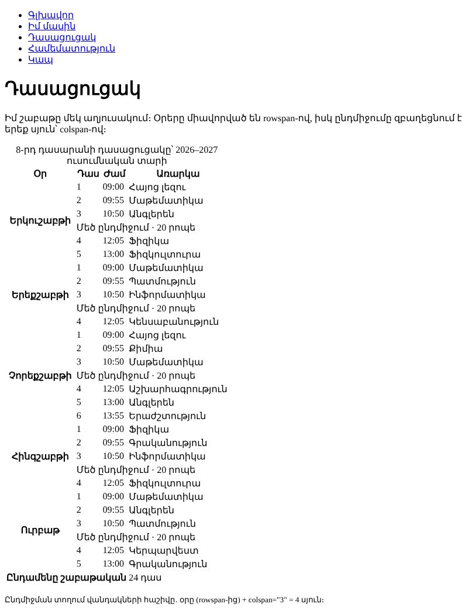
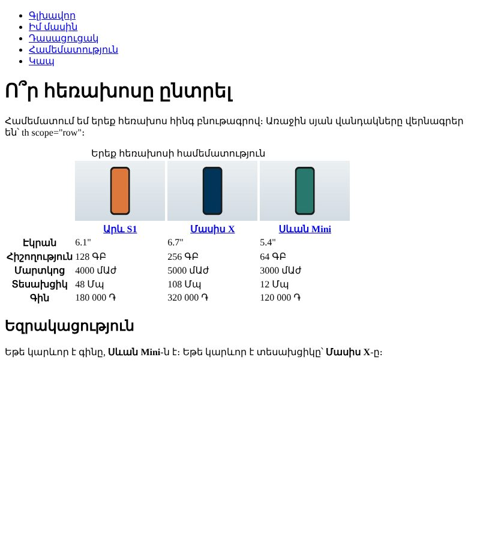

Տնային աշխատանք · HTML Դաս 03 · մինի-նախագիծ
Կայքում ավելանում են երկու էջ՝ շաբաթական դասացուցակ rowspan-ով և colspan-ով և հեռախոսների համեմատություն տողային վերնագրերով։
Օգտագործիր միայն Դաս 01–03-ի թեգերը։ Աղյուսակի եզրագծերը և գույները CSS են, որը սկսվում է Դաս 06-ում․ Դաս 03-ի խաղահրապարակի ոճերը միայն ցուցադրություն էին։ Ֆորմաներ դեռ չկան (Դաս 04)։
Կայքում հայտնվում են երկու նոր էջ՝ աղյուսակներով։ Առանց CSS-ի աղյուսակները եզրագծեր չունեն․ կառուցվածքը ստուգելու համար օգտագործիր DevTools-ը։


Սկսիր Դաս 02-ի քո կայքից։ Եթե այն չունես, վերցրու Դաս 02-ի օրինակը։
Ստեղծիր pages/schedule.html և pages/compare.html։ Ավելացրու երկու նոր կետ նավիգացիայում բոլոր հինգ էջում։
Մինչ դասացուցակը, կառուցիր փորձնական աղյուսակ՝ 4 տող × 3 սյուն, միայն table, tr, td-ով։ Հետո քայլ առ քայլ ավելացրու th, caption, thead, tbody, tfoot և scope։ Ամեն քայլից հետո նայիր բրաուզերին։
Օրվա անունը մեկ վանդակ է, որը զբաղեցնում է այդ օրվա բոլոր տողերը։ Ընդմիջման տողը նույնպես այդ օրվա մեջ է, ուստի 5 դասով օրվա համար rowspan="6"։
<tr>
<th scope="row" rowspan="6">Երկուշաբթի</th>
<td>1</td>
<td>09:00</td>
<td>Հայոց լեզու</td>
</tr>
<tr>
<!-- Օրվա վանդակ չկա․ այն արդեն զբաղեցված է վերևից -->
<td>2</td>
<td>09:55</td>
<td>Մաթեմատիկա</td>
</tr>
<tr><td>3</td><td>10:50</td><td>Անգլերեն</td></tr>
<tr>
<td colspan="3">Մեծ ընդմիջում · 20 րոպե</td>
</tr>
<tr><td>4</td><td>12:05</td><td>Ֆիզիկա</td></tr>
<tr><td>5</td><td>13:00</td><td>Ֆիզկուլտուրա</td></tr>Ամեն տողում պետք է լինի 4 սյուն։ Առաջին տողում՝ օրը + 3 td։ Հաջորդ տողերում՝ 3 td, որովհետև 4-րդը «գալիս է» վերևից։ Ընդմիջման տողում՝ colspan="3"։ Եթե աղյուսակը «ծռվում է», առաջինը հաշվիր։
caption՝ աղյուսակի վերնագիրըthead-ում՝ չորս th scope="col"th scope="row"tfoot՝ «Ընդամենը շաբաթական» (colspan="3") և դասերի թիվըscope-ըhref="#conclusion")th scope="row"h2 id="conclusion" և եզրակացությունElements ներդիրում բացիր աղյուսակը։ Մկնիկը տար td-ի վրա, և բրաուզերը կընդգծի այդ վանդակը էջում։ Այդպես կտեսնես, թե որ վանդակն ինչքան տեղ է զբաղեցնում։
rowspan-ով, ընդմիջումները՝ colspan-ովcaption, thead, tbody, tfootscopeth scope="row"| Սխալ | Ինչպես ուղղել |
|---|---|
| Օրվա հաջորդ տողերը մեկ սյուն աջ են գնացել | Չես հանել td-ն այն տողերից, որոնք զբաղեցնում է rowspan-ը |
| Ընդմիջումից հետո դասերը տեղափոխվել են «Օր» սյուն | rowspan-ը հաշվել ես առանց ընդմիջման տողի։ Գումարիր 1 |
| Աղյուսակը նման է պարզ տեքստի | Սպասելի է․ եզրագծերը և ֆոնը CSS են (Դաս 06)։ Կառուցվածքը ստուգիր DevTools-ով |
Սրանք Դաս 03-ի տնային աշխատանքի կետերն են։ «մինի-նախագծում» նշվածները արդեն կատարել ես վերևի քայլերում, մնացածը կատարիր առանձին ֆայլերում կամ նույն թղթապանակում։
table, tr, td-ով։ մինի-նախագծումth-երով և caption։ մինի-նախագծումthead-ի և tbody-ի։ Ավելացրու tfoot։ մինի-նախագծումscope-երը։ Բացատրիր մեկնաբանության մեջ՝ ինչու։ մինի-նախագծումrowspan օրերի համար։ մինի-նախագծումcolspan)։ մինի-նախագծումrowspan="2" դիր, բայց հաջորդ տողից td-ն մի՛ հանիր։ Նկարագրիր՝ ինչ եղավ։ Հետո ուղղիր։th scope="row")։ մինի-նախագծումthead, scope, caption։ Գրիր արդյունքը։Երբ բաժին 03-ի բոլոր կետերը նշված են, բացիր օրինակը և քո էջը կողք կողքի։ Բացիր երկուսի կոդն էլ խմբագրիչում։ Գտիր մեկ բան, որ դու արել ես այլ կերպ, և մտածիր՝ որն է ավելի հասկանալի և ինչու։ Քո լուծումը կարող է տարբերվել և լինել ճիշտ։